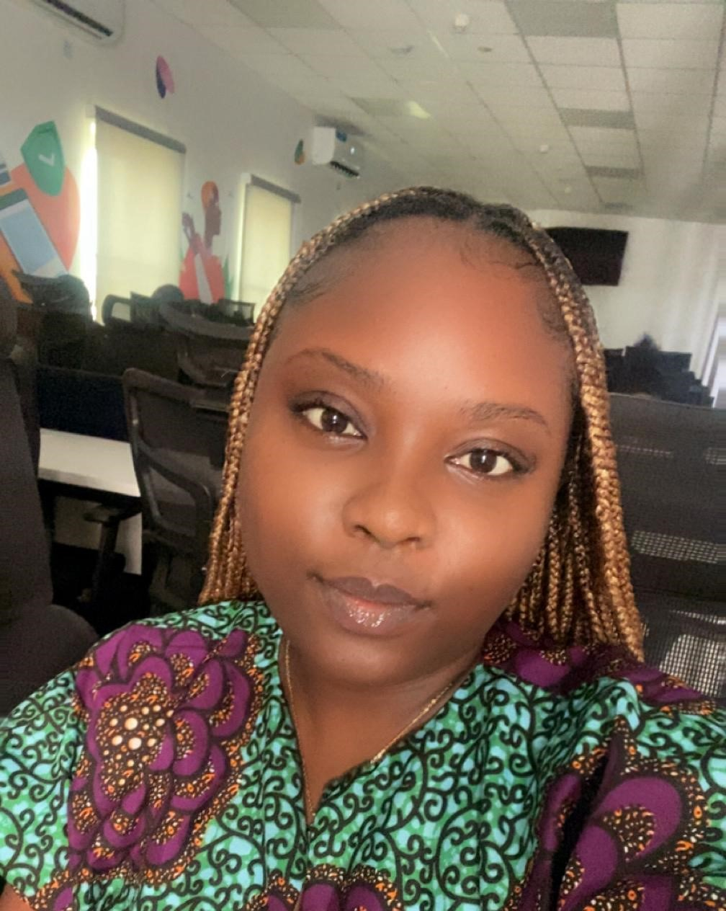

Efe Jane Adaniken

Professional Summary
Results-driven Product Support and Customer Experience Specialist with over 7 years of experience across banking and fintech industries. Proven expertise in customer support, product research, customer retention, KYC verification, and relationship management. Adept at analyzing customer feedback to enhance product offerings and improve customer satisfaction. Seeking to leverage my skills in a dynamic environment to drive customer success and retention.
Education
B.Sc. Business Administration
University of Lagos, Nigeria | 2016
Professional Experience
Enterprise Merchant Success Specialist
Flutterwave, Lagos, Nigeria | Nov 2024 – Present
- Provide exceptional, tailored support to premium (HNIs) merchants, ensuring a seamless customer experience.
Analyst, Customer Experience
Flutterwave, Lagos, Nigeria | May 2023 – Oct 2024
- Created Standard Operating Manuals (SOMs) to guide agents in handling customer requests efficiently.
- Resolved customer issues via Twitter, chat, and emails, maintaining high satisfaction levels.
Product Support Specialist
FairMoney Microfinance Bank, Lagos, Nigeria | Feb 2022 – Apr 2023
- Reported and followed up on product bugs, collaborating with product managers for timely fixes
M36 (Powered by Union Bank) - Investment Concierge/Product Support Specialist
Union Bank of Nigeria, Lagos, Nigeria | Jan 2021 – Jan 2022
- Advised users on investment options based on their profiles, driving increased onboarding.
- Collected and analyzed customer feedback to enhance product features and usability.
Customer Service Executive
Union Bank of Nigeria, Lagos, Nigeria | Sep 2017 – Jan 2022
- Managed first-level resolution for fraud-related cases, ensuring swift and satisfactory outcomes.
Skills
- Team Leadership & Training
- KYC Verification
- Excellent Customer Service Skills
- Data Analysis & Reporting
Notable Projects & Achievements
- Led the creation of an SOM for self-service bank statement requests, reducing contact center interactions and boosting customer satisfaction.
- Awarded “Top Performer” at Flutterwave for achieving the highest customer satisfaction scores in Q1 and Q2 of 2024.